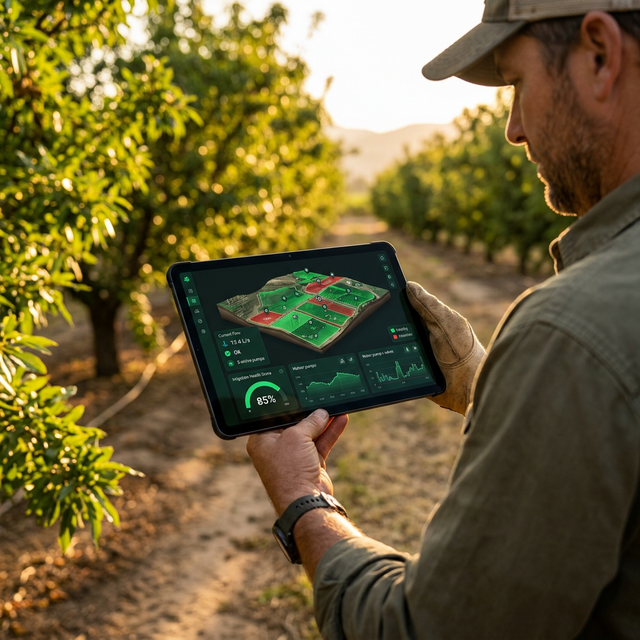
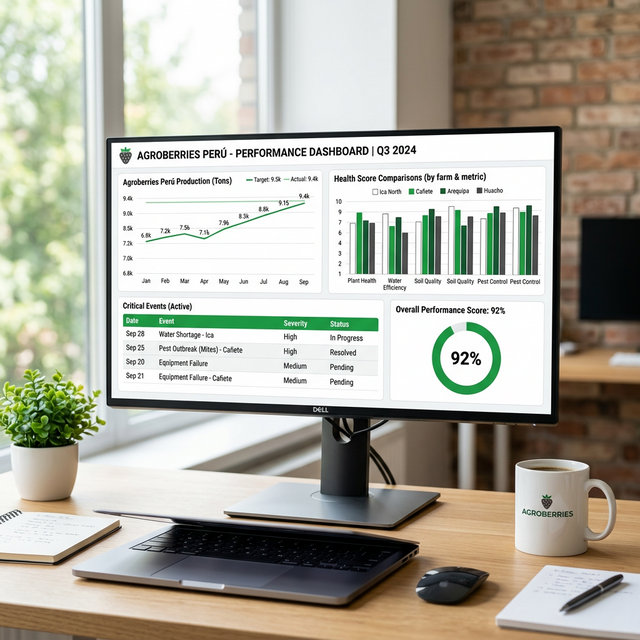

OPERACIÓN AGRÍCOLA 2.0
Control Total del Riego.
La plataforma que transforma datos en decisiones estratégicas: desde el terreno hasta la gerencia.
La plataforma que transforma datos en decisiones estratégicas: desde el terreno hasta la gerencia.

Incertidumbre Total
Sin datos en tiempo real, las fallas pasan desapercibidas hasta que el daño al cultivo es irreversible.
Dependencia Personal
El conocimiento vive en cuadernos o en la cabeza del operador. Si el equipo rota, la historia se borra.
Inversión Reactiva
Gerencia invierte basándose en opiniones, no en métricas de recurrencia o impacto real de fallas.
No somos solo software. Somos el Twin Digital de tu operación de riego.

Mediciones
Cruce de presiones y caudales vs. diseño óptimo.
Eventos
Efectividad en la resolución de fallas críticas.
Calendario
Cumplimiento de la pauta de mediciones del equipo.
Eliminamos los cuellos de botella para que tu campo esté operativo en tiempo récord.
Reducimos el tiempo de estructuración de días a horas mediante algoritmos de validación de polígonos y puntos GPS.
Tus operadores capturan los activos, nosotros los validamos. El cliente tiene el control desde el minuto uno.
Agenda una demo de 30 minutos y descubre por qué Baum es el estándar en gestión de riego.
Contacto Directo
b.sepulveda@baumsystem.com
Berni Sepúlveda